Night City, 2077. Una megalópolis controlada por megacorporaciones donde la vida humana vale lo que tu reputación en la calle. Encarnas a V, un mercenario que tras un golpe fallido acaba con el fantasma digital de una leyenda del rock grabado en su cabeza.
El lanzamiento fue un desastre, sí. Pero tras años de parches y la expansión Phantom Liberty, Cyberpunk 2077 es uno de los mejores RPGs de mundo abierto que existen. La narrativa es brutal, Night City tiene una densidad de detalle que pocas ciudades virtuales han igualado y la banda sonora es de otro nivel.
La historia de Johnny Silverhand, la expansión Phantom Liberty y la cantidad de decisiones que realmente cambian el juego. Cada run es diferente según el origen que elijas al principio.
Dos historias del salvaje oeste separadas por décadas pero conectadas por el mismo universo. RDR2 es la precuela: Arthur Morgan, forajido con más honor del que debería tener, intentando sobrevivir al fin de una era. RDR1 cierra la historia con John Marston y uno de los finales más recordados de los videojuegos.
RDR2 es probablemente el juego con el mundo más vivo que existe. Los NPCs tienen rutinas reales, los animales se comportan de forma creíble y cada rincón del mapa tiene algo que descubrir. La historia de Arthur Morgan es de las mejores escritas en un videojuego.
El honor importa. Cada decisión afecta cómo te trata el mundo. Y el capítulo 6 de RDR2 es de las experiencias más emotivas que vas a tener delante de una pantalla.
Universo procedural con 18 trillones de planetas, cada uno único. Empiezas varado en un planeta aleatorio sin recursos y sin saber muy bien qué estás haciendo. La idea es explorar, sobrevivir, construir bases y eventualmente llegar al centro de la galaxia.
El lanzamiento fue otro desastre histórico. Las promesas del fundador Sean Murray no se cumplieron ni de lejos y la comunidad lo destrozó. Pero Hello Games, sin decir nada a nadie, durante años fue sacando actualizaciones gratuitas masivas que convirtieron el juego en algo completamente diferente. Hoy es uno de los mejores ejemplos de cómo arreglar un lanzamiento fallido.
La libertad total. Puedes pasarte horas solo explorando planetas sin hacer nada concreto y es perfectamente válido. También tiene modo multijugador cooperativo y base building bastante completo.
Continúa la historia de Henry de Skalitz, el herrero que en la primera entrega pasó de no saber leer ni pelear a convertirse en alguien capaz de cambiar el rumbo de una guerra. KCD2 amplía todo lo que hizo grande al primero con un mapa más grande, más opciones de diálogo y el mismo nivel de detalle histórico obsesivo.
No hay elfos ni dragones. Es un RPG medieval realista en el que si te pillan robando te meten en la cárcel, si vas sucio la gente te trata peor y si no entrenas el combate pierdes los duelos. La progresión es lenta y exigente, pero cuando dominas el sistema es increíblemente satisfactorio.
El sistema de combate cuerpo a cuerpo, uno de los más realistas del género. Y la sensación de que cada decisión tiene consecuencias reales en el mundo.
Albion, un mundo de fantasía con mucho humor británico y una libertad inusual para la época. Puedes ser el héroe más noble o el villano más temido, casarte, tener hijos, comprar propiedades y hacerte rico alquilándolas mientras te dedicas a salvar el mundo.
Fable 2 tiene un encanto que pocos juegos han vuelto a conseguir. El tono, el humor, la música de Russell Shaw y esa sensación de que el mundo reacciona a todo lo que haces. Peter Molyneux prometió demasiado como siempre, pero lo que entregó fue genuinamente memorable.
Playground Games (los de Forza Horizon) están desarrollando un reboot de la saga para Xbox Series X y PC. Las primeras imágenes muestran un Albion de cuento de hadas con un tono que recuerda al espíritu del original. Sin fecha confirmada aún pero con muchas expectativas.
La saga Mafia es la versión cinematográfica del crimen organizado en los videojuegos. Mafia 2 sigue a Vito Scaletta en una ciudad ficticia de los años 40-50, con una narrativa tan bien construida que parece una película de Scorsese interactiva. Mafia 3 da un giro con Lincoln Clay en los 60, con un tono más crudo y político.
El mejor de los tres sin discusión. La historia de Vito y Joe, la ambientación de época, la música y una narrativa sin concesiones. Uno de los mejores juegos de su generación que no recibió el reconocimiento que merecía.
La entrega más reciente vuelve a los orígenes europeos de la mafia siciliana y nos pone en la piel de Enzo Favara. Nuevo protagonista, nueva época, mismo ADN narrativo de la saga. Todavía reciente pero con muy buenas críticas iniciales.
Ezio Auditore da Firenze es el personaje más querido de toda la franquicia y probablemente uno de los protagonistas más completos de la historia del videojuego. Su arco narrativo atraviesa tres juegos y décadas de su vida, desde joven vengativo en el Renacimiento italiano hasta maestro asesino en Estambul.
AC2 reinventó la franquicia con una ambientación en la Italia del Renacimiento impresionante. Brotherhood añadió Roma y el sistema de gestión de la hermandad. Revelations cerró la historia con Ezio y Altaïr de una forma que pocos esperaban. Los tres juntos forman una de las trilogías más sólidas del gaming.
La franquicia ha tenido entregas muy dispares desde entonces. Black Flag sigue siendo un favorito por su ambientación pirata. Origins, Odyssey y Valhalla pivotaron hacia el RPG de mundo abierto con resultados mixtos. Shadows vuelve al Japón feudal con mecánicas más cercanas a los clásicos.
Dunwall, una ciudad victoriana steampunk plagada de ratas y corrupción política. Encarnas a Corvo Attano, guardaespaldas real acusado del asesinato de la emperatriz, con poderes sobrenaturales otorgados por una entidad misteriosa llamada El Forastero.
Dishonored es uno de los mejores ejemplos de immersive sim: cada misión tiene múltiples soluciones. Puedes completar todo el juego sin matar a nadie, solo con sigilo y habilidad. O puedes desatar el caos absoluto con poderes como Blink o Devorar Tiempo. El juego no te juzga, pero el mundo cambia según tus decisiones.
El DLC standalone protagonizado por Billie Lurk y Daud es posiblemente lo mejor que ha producido la saga. Una historia más íntima, más oscura y con un final que cierra el misterio del Forastero de una forma que nadie esperaba.
Secuela de El Palo de la Verdad. Esta vez los niños de South Park han cambiado los RPG de fantasía por los superhéroes. Eres el nuevo chico del barrio intentando unirte a la Agencia de Justicia de los Coon Friends y construir suficientes seguidores en redes sociales para financiar una película.
Es exactamente lo que esperas de South Park: humor sin filtros, referencias constantes a la cultura pop y una sátira brutal de los clichés de superhéroes. Trey Parker y Matt Stone escribieron el guión completo, así que se siente como episodios jugables de la serie.
El sistema de combate por turnos con posicionamiento táctico es más profundo de lo que parece. Y los poderes de superhéroe de cada personaje están diseñados con un nivel de detalle absurdo que solo tiene sentido si has visto la serie.
Eres una cabra. No hay objetivos, no hay historia, no hay ningún motivo concreto para hacer nada. Simplemente deambulas por un mapa destruyendo todo lo que encuentras, lanzándote contra personas, activando ragdolls imposibles y acumulando puntos de manera completamente arbitraria.
Goat Simulator es básicamente el simulador oficial del alumno de ASIR en su primer año: sin un objetivo claro, destruyendo configuraciones que funcionaban perfectamente, colisionando con cosas que no debería tocar y generando el caos mientras el profesor intenta entender qué ha pasado. La diferencia es que la cabra no tiene que documentar nada después.
Coffee Stain Studios lo empezó como un prototipo de prueba interno, lo subieron a internet como broma y la comunidad lo pidió como juego real. Lo lanzaron con todos los bugs intactos porque, según ellos, arreglarlos hubiera arruinado la experiencia. Tiene todo el sentido del mundo.
Llevas clientes de un punto a otro de la ciudad en el menor tiempo posible, ignorando absolutamente todas las normas de tráfico. Semáforos, aceras, otros coches, rampas accidentales — todo es válido si el cliente llega antes de que acabe el tiempo.
Crazy Taxi nació en las recreativas y fue uno de los grandes éxitos de Dreamcast, la consola de Sega que llegó antes de tiempo y murió demasiado pronto. Su mecánica de puntuación arcade, su banda sonora punk rock y su ritmo frenético lo convirtieron en un referente que todavía hoy se cita cuando se habla de diseño de juegos accesibles y adictivos.
Empiezas siendo un microorganismo en el fondo del océano y acabas siendo una civilización espacial conquistando galaxias. Cinco fases completamente diferentes: célula, criatura, tribu, civilización y espacio, cada una con su propio estilo de juego.
Will Wright, el creador de Los Sims, prometió una simulación evolutiva revolucionaria. Lo que entregaron fue algo más superficial de lo esperado en cada fase individual, pero el conjunto, la creatividad del editor de criaturas y la escala del juego lo convirtieron en una experiencia única que todavía no ha sido replicada.
La herramienta más recordada del juego. Con unos pocos clics podías crear criaturas que iban desde lo adorable hasta lo perturbador, y el juego las animaba de forma procedural. Era tan popular que lanzaron el editor de forma gratuita antes del lanzamiento del juego.
La saga de simulación de vida más vendida de la historia. Creas personas, construyes sus casas, gestionas sus necesidades, sus relaciones y sus carreras. O las encierras en una piscina sin escalera. Las dos opciones son igual de válidas.
Los Sims 4 lleva más de una década activo y se hizo gratuito en 2022. Tiene una comunidad de mods enorme que añade prácticamente cualquier cosa que puedas imaginar. La saga en conjunto ha vendido más de 200 millones de copias y definió el género de simulación de vida para toda una generación.
Project Rene, el nombre en clave de Los Sims 5, está en desarrollo. Se sabe poco pero EA ha confirmado que tendrá componentes multijugador opcionales y un editor más potente que el actual.
// SELECCIÓN PERSONAL — MUNDO ABIERTO · ACCIÓN · COMEDIA · CLÁSICOS
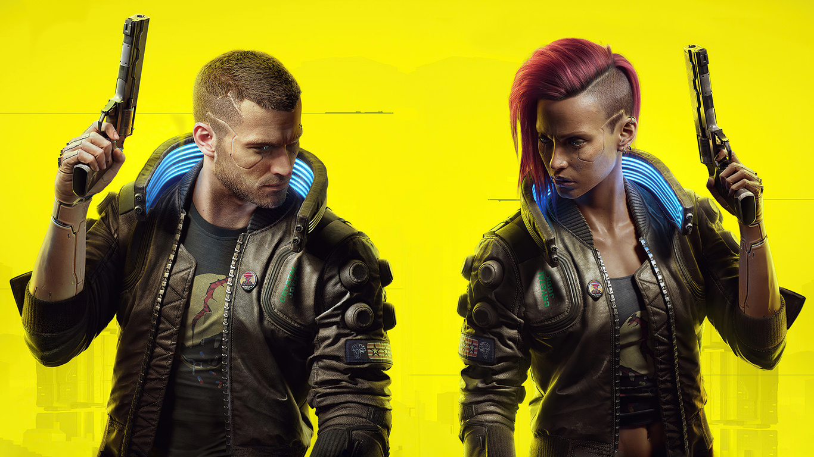
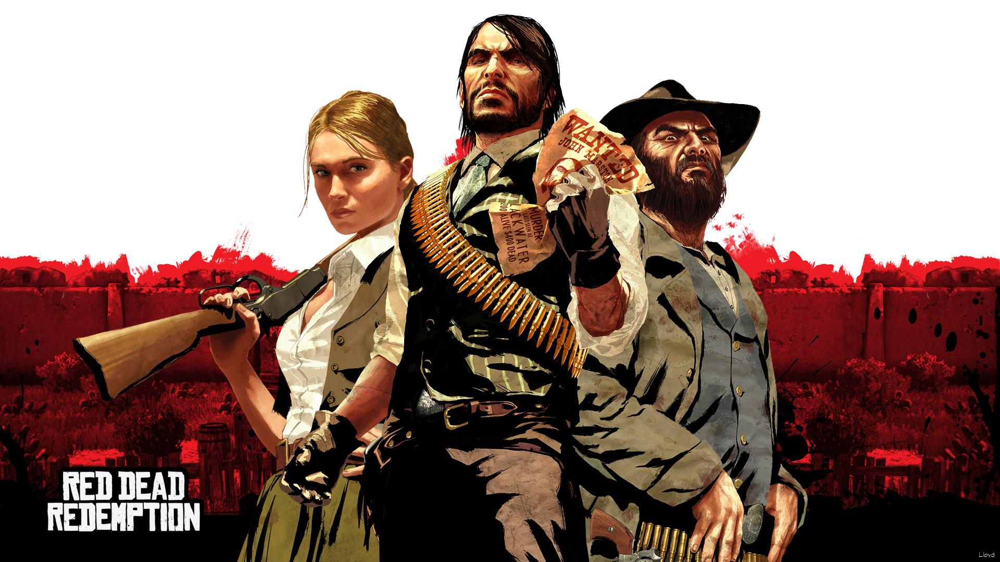
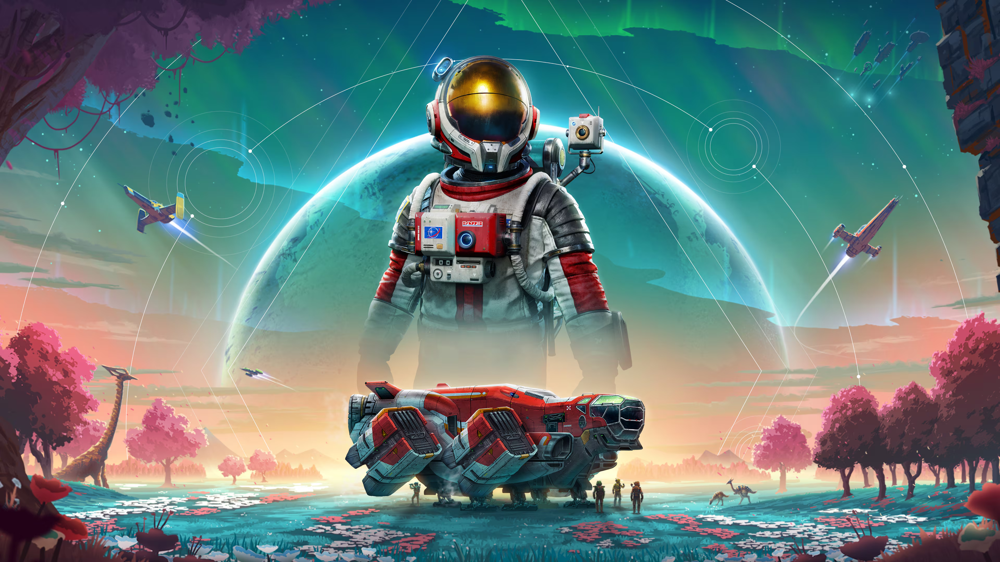
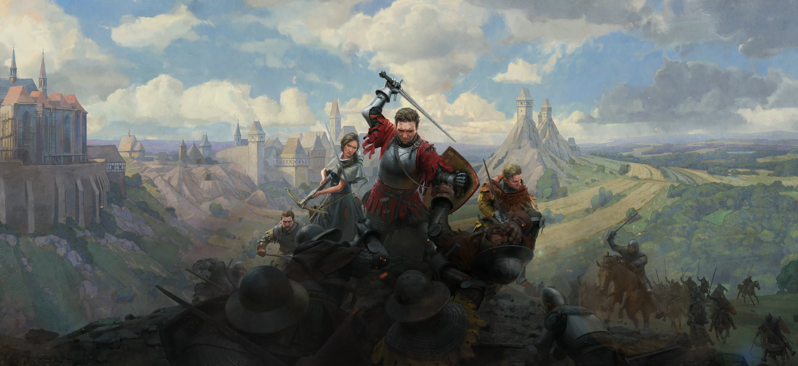
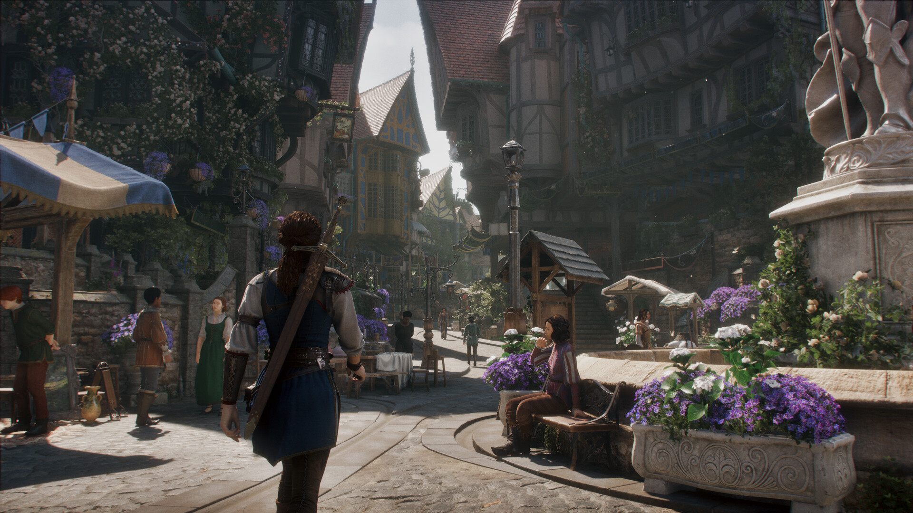
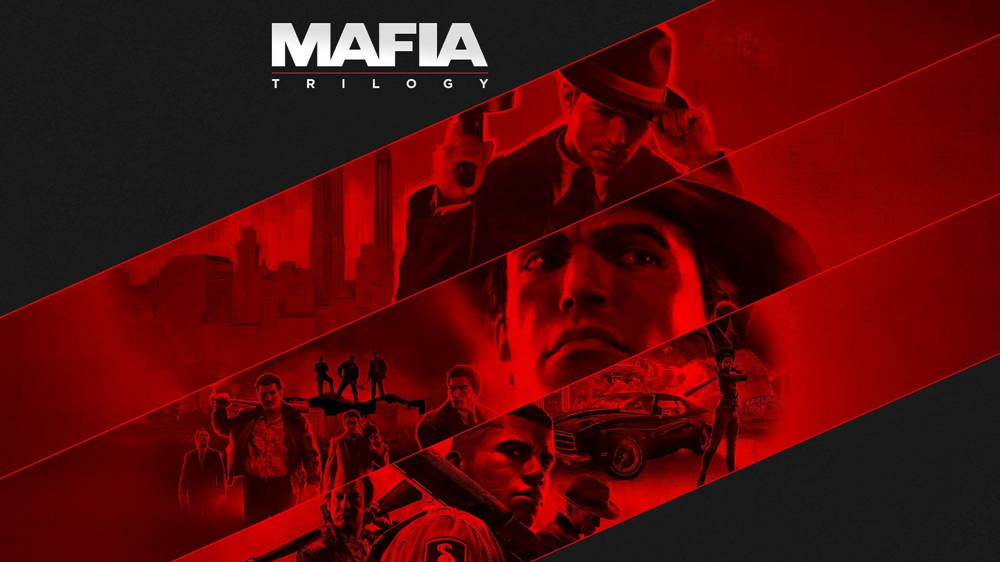
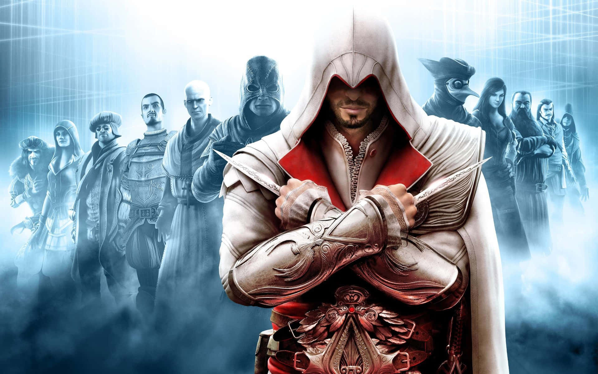
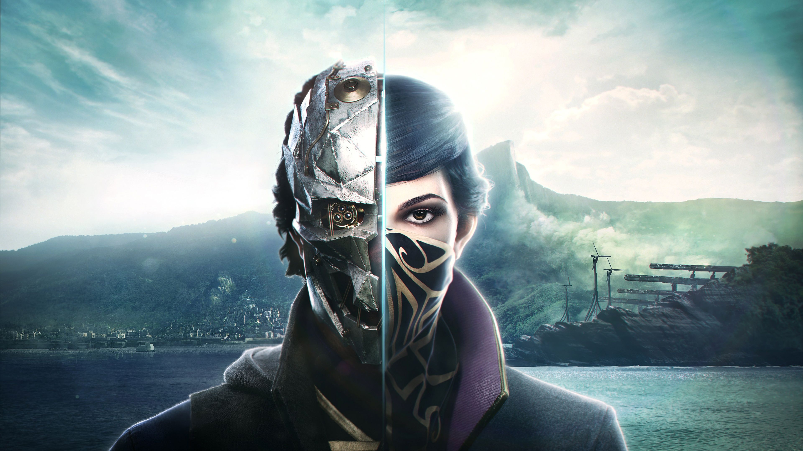
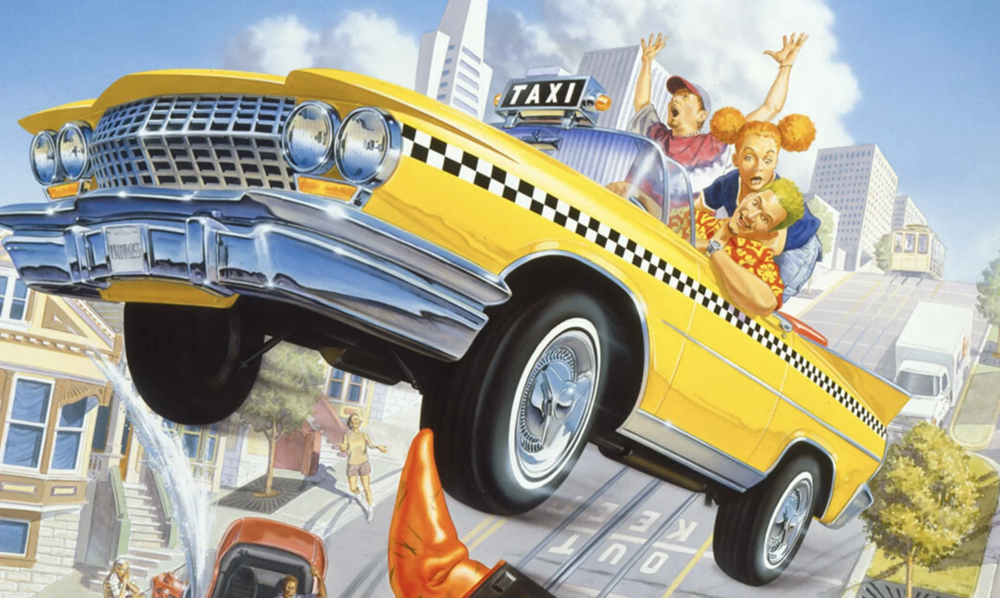
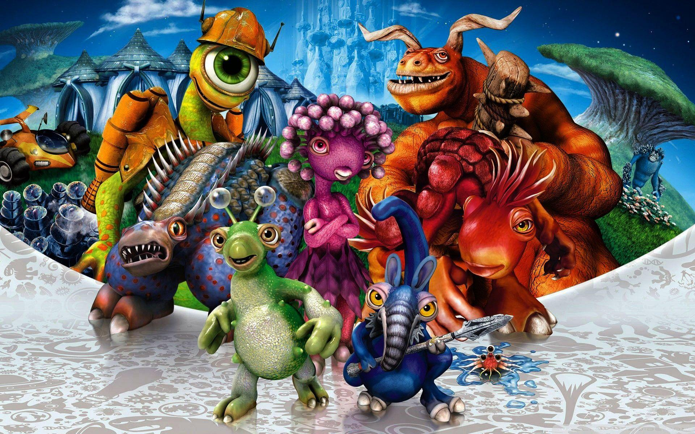
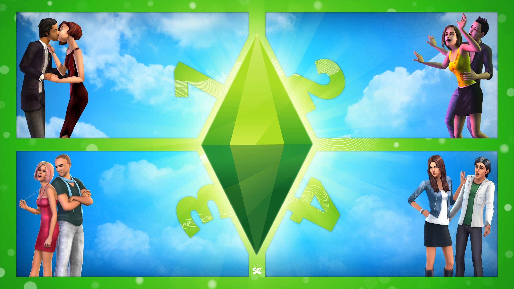